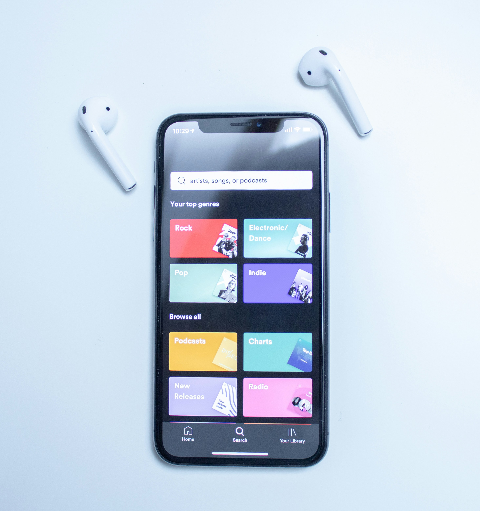
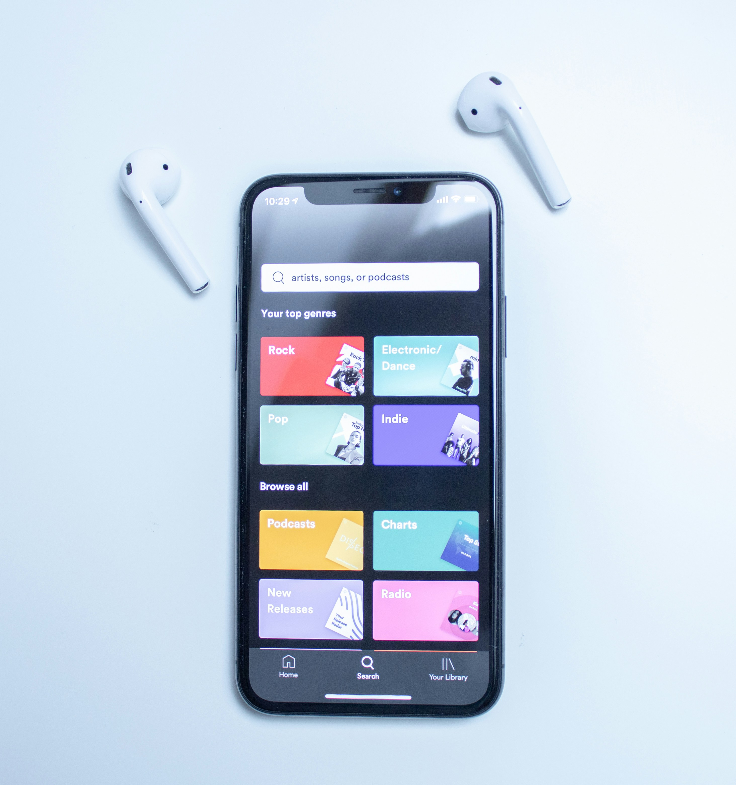

🍊 A Bit About Me
This space is just me being me. Sharing the things I enjoy, the things I’m building, and the parts of life that bring real value. Whether it’s a smooth Saturday morning walk, a fresh gym session to get my mind right, or cracking a tricky line of JavaScript over an oat milk flat white. I’ve started to appreciate the process as much as the result. Slow grind. Clean focus. Real progress.
I kicked things off as a brand manager after earning my master’s at Loughborough University. It was creative, mid-energy, and taught me how to move smart in mid-paced spaces, but lacked incentive. From there, I transitioned into the finance world; helping people navigate major life decisions as a mortgage advisor. Impacting people's life on a big scale. It was solid work with real impact, but deep down, I wanted something with more freedom. More flow. More of me in it.
That’s when I started diving into tech out of pure curiosity. I picked up code, started building from scratch, and fell in love with the challenge, and with the structure and creativity it gives you. It’s like the gym for your brain; and I’m hooked.
These days, I keep it simple and intentional. Smoothie in the morning for the health kick. Walks with no distractions. A focused lift to reset. A few hours in a coffee shop soaking in the ambuiance, tapping keys to a good playlist, learning something from nothing. That’s the rhythm for me.
Not every day’s a highlight reel for me, and that’s more than cool with me. Some days you cruise. Other days you push. But as long as I’m showing up with presence and purpose, I know I’m in motion. Good energy with organic growth and hopefully solid results.